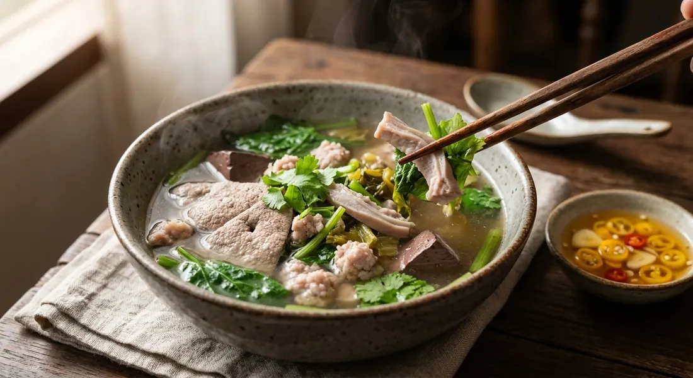

The breakfast soup of Thai market stalls — clear pork bone broth poured over blood, offal and greens, each blanched to order, never boiled together in one pot.

ต้มเลือดหมู — pork blood soup — is assembled, not boiled. The rule that runs through every Thai source is stated bluntly by ครัวตุ๊กตา on Pantip: never boil everything together in one pot — blanch each item to order at serving time. Liver sliced thin, heart, stomach and intestine boiled separately until tender, blood in bite-size blocks, greens dropped in hot water only in the last minutes. Aroifin's commercial batch says the same about its greens: ivy gourd, crown daisy and the rest go in only in the final five to ten minutes.
The broth is the other discipline. Pantip's home cook adds the bones only after the boil has calmed — into a rolling boil, and the broth clouds. Every source skims: Aroifin skims "constantly for a clear soup", ครัวตุ๊กตา simmers her bones one to two hours doing the same. TrueID goes further and strains the finished stock through a sieve before it ever meets the bowl.
What lands in the bowl is a matter of taste and budget. The stall version carries the full offal board — liver, heart, spleen, stomach, intestine, blood. ครัวตุ๊กตา's family pot adds pork crackling. TrueID's adds crispy pork belly, unique among the sources. And Pantip's "ตามใจฉัน" — to my own taste — version skips offal entirely: just seasoned pork balls and blood, for people who want the soup without the organs. Kapook's home version is the only one that records the classic yellow-chilli and vinegar dipping sauce that belongs on the side.
| Thai | English | Amount |
|---|---|---|
| น้ำซุปกระดูกหมู | Pork bone stock | 3 cups |
| เนื้อหมูสับ | Minced pork | 100 g |
| ตับหมู | Pork liver | 100 g |
| กระเพาะหมู | Pork stomach | 100 g |
| เลือดหมู | Pork blood, cut into bite-size pieces | 1 block |
| ตำลึงหรือปวยเล้ง | Ivy gourd leaves or spinach | ½ cup |
| ขึ้นฉ่าย | Chinese celery, cut short | 1 stalk |
| ตั้งฉ่าย | Preserved mustard greens | 1 tsp |
| กระเทียมเจียว | Fried garlic, to garnish | a spoonful |
| พริกไทยป่น | Ground white pepper, to garnish | a dusting |
For the dipping sauce: 2 yellow spur chillies, ½ tbsp garlic pounded fine with a pinch of salt, 2 tsp vinegar stirred in. The stall board (Wongnai): liver, spleen, heart, pork balls and blood, each blanched separately and rested in room-temperature water, with pickled garlic brine in the broth. The no-offal pot (Pantip): spare ribs and a chicken carcass simmered with bruised garlic, peppercorns and celery root; seasoned minced-pork balls and a block of blood, lettuce lining the bowl.
The broth. Kapook starts from ready-made pork bone stock. TrueID pounds coriander root, salt, peppercorns and garlic in a mortar before simmering, then strains the finished broth. Wongnai's stall adds pickled garlic brine to the soup — its house touch. Aroifin wraps garlic and peppercorns in muslin and drops the bundle in the pot.
The offal. Everything (Aroifin, Wongnai), the classic set with intestines (ครัวตุ๊กตา), or none at all — pork balls and blood only (Pantip's "to my own taste" version for people who do not eat offal).
The sweet. Rock sugar in the commercial broth (Aroifin), plain sugar (TrueID), raw or rock sugar in the home pot (Pantip), or no sugar at all (Kapook, Wongnai).
The extras. Crispy pork belly in the bowl (TrueID alone), pork crackling (ครัวตุ๊กตา), daikon in the broth (Aroifin, TrueID), seaweed and dried daylily flowers in the commercial batch (Aroifin).
The greens. Ivy gourd leaves as the classic (Kapook, ครัวตุ๊กตา, TrueID), lettuce as the everyday stand-in (Pantip, Wongnai, TrueID), crown daisy and seaweed in the commercial bowl (Aroifin).
The dip. Only Kapook documents the yellow-chilli-and-vinegar sauce. The other sources serve chilli powder, pickled chillies in vinegar, fish sauce and sugar on the side for each diner to build their own.
This recipe is translated from the following Thai-language sources. Where they disagree, we've said so.
1. Kapook Cooking — "ต้มเลือดหมู หอม ๆ ร้อน ๆ กับน้ำจิ้มรสเด็ด" (the home recipe and dipping sauce used here) — cooking.kapook.com
2. Pantip — ครัวตุ๊กตา, "ต้มเลือดหมูตำลึงร้อน ๆ" (the blanch-to-order rule) — pantip.com
3. Pantip — ห้องก้นครัว, "ต้มเลือดหมู ฉบับตามใจฉัน น้ำซุปหวาน ๆ กลิ่นหอมหวน" (the no-offal family pot) — pantip.com
4. Aroifin — "วิธีทำ ต้มเลือดหมู น้ำซุปเข้มข้น อร่อยกลมกล่อม เลือดหมูไม่เหม็นคาว" (the 40-serving commercial batch) — aroifin.com
5. TrueID Food — จรรยา เลิศพงษ์ไทย, "ต้มเลือดหมู ความอร่อยที่ลงตัว" (the strained-broth version with crispy pork) — food.trueid.net
6. Wongnai — guneweenz, "สูตร ต้มเลือดหมู" (the stall board with pickled garlic brine) — wongnai.com